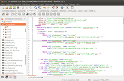

Bluefish
Dieser Artikel wurde für die folgenden Ubuntu-Versionen getestet:
Ubuntu 14.04 Trusty Tahr
Zum Verständnis dieses Artikels sind folgende Seiten hilfreich:
Verwenden eines PPAs, optional
Pakete aus dem Quellcode erstellen, optional
Bluefish  ist ein Editor für Programmierer, der die Grafikbibliothek GTK+ nutzt und sich daher gut in GNOME, Xfce und LXDE integriert. Er bietet unter anderem Syntaxhervorhebung für HTML, CSS, PHP, Java, Perl, Python, C und Pascal an. Bluefish beinhaltet HTML-Tags in einer Werkzeugleiste. Zusätzlich lassen sich externe Programme wie z.B. Firefox einbinden und der Funktionsumfang erweitern. Erstellte Internetseiten können mit externen FTP-Programmen publiziert werden.
ist ein Editor für Programmierer, der die Grafikbibliothek GTK+ nutzt und sich daher gut in GNOME, Xfce und LXDE integriert. Er bietet unter anderem Syntaxhervorhebung für HTML, CSS, PHP, Java, Perl, Python, C und Pascal an. Bluefish beinhaltet HTML-Tags in einer Werkzeugleiste. Zusätzlich lassen sich externe Programme wie z.B. Firefox einbinden und der Funktionsumfang erweitern. Erstellte Internetseiten können mit externen FTP-Programmen publiziert werden.

Installation¶
Bluefish kann über das folgende Paket aus den offiziellen Paketquellen installiert [1] werden:
bluefish (universe)
 mit apturl
mit apturl
Paketliste zum Kopieren:
sudo apt-get install bluefish
sudo aptitude install bluefish
PPA¶
Wer die aktuellste Version nutzen möchte und diese nicht bereits in den offiziellen Paketquellen enthalten ist, kann ein "Personal Packages Archiv" (PPA) [2] nutzen.
Adresszeile zum Hinzufügen des PPAs:
ppa:klaus-vormweg/bluefish
Hinweis!
Zusätzliche Fremdquellen können das System gefährden.
Ein PPA unterstützt nicht zwangsläufig alle Ubuntu-Versionen. Weitere Informationen sind der  PPA-Beschreibung des Eigentümers/Teams klaus-vormweg zu entnehmen.
PPA-Beschreibung des Eigentümers/Teams klaus-vormweg zu entnehmen.
Damit Pakete aus dem PPA genutzt werden können, müssen die Paketquellen neu eingelesen werden.
Nach dem Aktualisieren der Paketquellen erfolgt die Installation wie oben angegeben. Klaus Vormweg stellt ein zweites PPA zur Verfügung, falls man eine noch auf GTK2 basierende Programmversion sucht.
Manuell¶
Um das Programm selbst aus dem Quellcode zu kompilieren, werden neben den in [3] erwähnten Paketen noch die folgenden Pakete benötigt [1]:
libgtk2.0-0
libgtk2.0-dev
libpcre3
libpcre3-dev
mit apturl
Paketliste zum Kopieren:
sudo apt-get install libgtk2.0-0 libgtk2.0-dev libpcre3 libpcre3-dev
sudo aptitude install libgtk2.0-0 libgtk2.0-dev libpcre3 libpcre3-dev
Danach lädt man sich den Quellcode  herunter, entpackt die Archivdatei (.tar.bz2) und kompiliert das Programm [3].
herunter, entpackt die Archivdatei (.tar.bz2) und kompiliert das Programm [3].
Benutzung¶
Bei Webeditoren gibt es abhängig von den eigenen Vorkenntnissen spezielle Vorlieben. HTML-Einsteiger bevorzugen häufig KompoZer oder BlueGriffon, während bei Fortgeschrittenen unter anderen gedit (mit Plugins) und Geany beliebt sind. Daher im Folgenden ein paar Besonderheiten von Bluefish:
Textbausteine für HTML, PHP und DocBook
Syntax-Referenz für HTML, PHP und Python
Projektverwaltung
Integration von tidy (HTML Syntaxcheck)
Problembehebung¶
Firefox¶
Möchte man Firefox für die Vorschau nutzen, muss der Aufruf ab Version 36 entsprechend angepasst werden. Dies erledigt man über "Bearbeiten -> Einstellungen - > Externe Befehle" und folgenden Befehl (firefox -remote 'openURL(%)' funktioniert nicht mehr):
firefox '%p'&
Drucken¶
Ältere Versionen von Bluefish (1.0.x) besitzen keine Druckfunktion. Um trotzdem drucken zu können, richtet man sich entweder über "Bearbeiten -> Einstellungen > externe Filter" einen benutzerdefinierten Druckbefehl ein:
lp -o media=a4 -o prettyprint -o page-top=72 -o page-left=54 -o cpi=12 -o lpi=8 '%f'
der dann im Menü unter "Werkzeuge -> Filter" zu finden ist und den Standarddrucker verwendet. Alternativ kann man auch den jeweiligen Standardeditor oder eines der unter Benutzung genannten Programme zum Drucken benutzen. Die Programmeinstellungen werden im Ordner ~/.bluefish/ gespeichert.
Links¶
Manual
- Handbuch
In allen Wassern - Webseiten bearbeiten mit Bluefish
 - LinuxUser, 03/2012
- LinuxUser, 03/2012Webeditoren unter Ubuntu/Linux Teil 4: Bluefish
- Blogbeitrag, 07/2009Webeditoren
 Übersichtsartikel
Übersichtsartikel Webentwicklung
Übersichtsartikel
- Erstellt mit Inyoka
-
 2004 – 2017 ubuntuusers.de • Einige Rechte vorbehalten
2004 – 2017 ubuntuusers.de • Einige Rechte vorbehalten
Lizenz • Kontakt • Datenschutz • Impressum • Serverstatus -
Serverhousing gespendet von